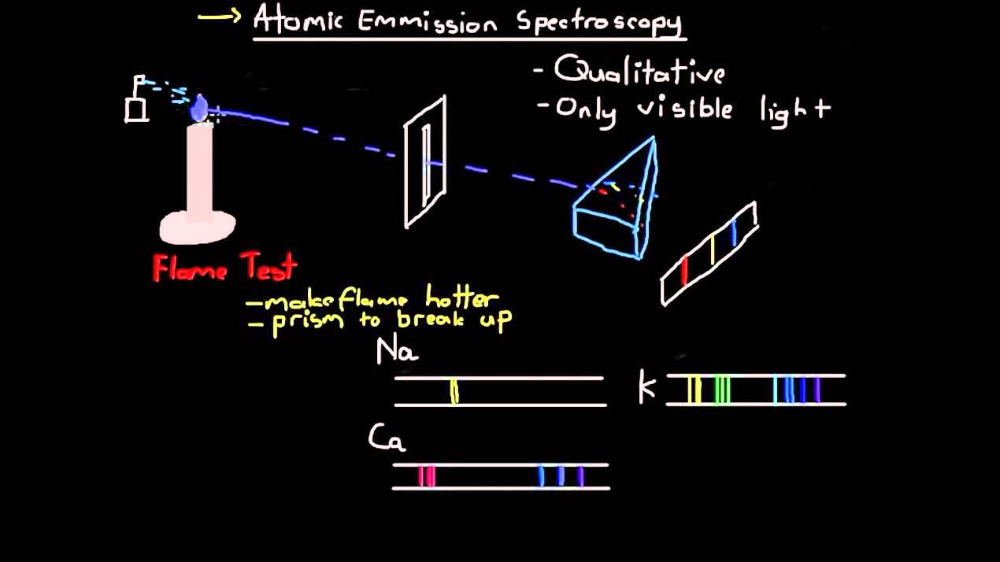
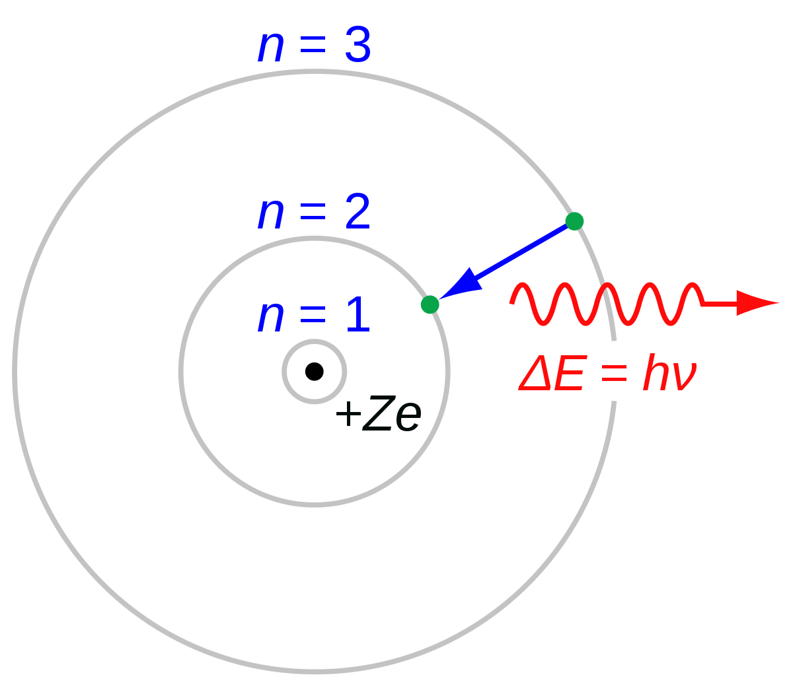

In 1913, the Danish scientist Niels Bohr (a student of Rutherford's) proposed an improvement. In his model, he placed each electron in a specific energy level. With his experiment on Atomic Emission Spectra.
According to Bohr's atomic model, electrons move in numbered orbits around the nucleus, much like planets circle the sun. These orbits, or energy levels, are located at certain distances from the nucleus.
His conclusions, Energy is discrete, not continuous.
After we have:Wave Model & Quantum Mechanics